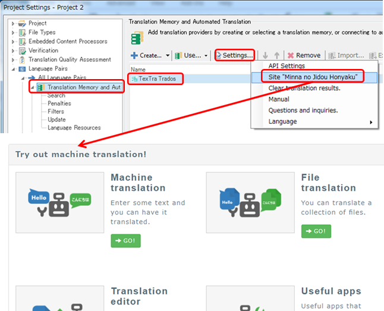

Minna no Jidou Hon'yaku
The TexTra Trados Addin provides functionality to work
with a Web site "Minna no Jidou Hon'yaku"(Machine translation everyone
improve for everyone).
Enter parameters for cooperation in the API
configuration screen.
https://mt-auto-minhon-mlt.ucri.jgn-x.jp/
The
"Minna no Jidou Hon'yaku" Web site for translation in the browser.
The
function and data to help translate the site
you want to use from the
call to TexTra Trados Addin.
(Hereinafter, the site "Minna no Jidou
Honyaku" is called "the web site" in this manual.)
Press
Project Settings > Translation Memory and Automated Translation
> TexTra Trados > Settings > Site "Minna no Jidou Hon'yaku",
then the web site opens in a browser.
